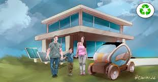

Blog de la Energia Solar
¿Que es la energia Solar?
Beneficios de la energia Solar
Retos y limitaciones
Energia Solar
El futuro de la energía solar
Con los avances tecnológicos, la energía solar será cada vez más accesible y eficiente. Los paneles están reduciendo su precio y aumentando su capacidad de generar electricidad, y el almacenamiento en baterías es cada vez más efectivo.
Se espera que en los próximos 20 años, gran parte de la electricidad mundial provenga de esta fuente limpia. La combinación de tecnología avanzada, reducción de costos y urgencia climática hará que cada vez más hogares, empresas y países adopten esta solución.

Katherine Natalia Serrano Garcia
Cuarto Bachillerato B
Clave:25